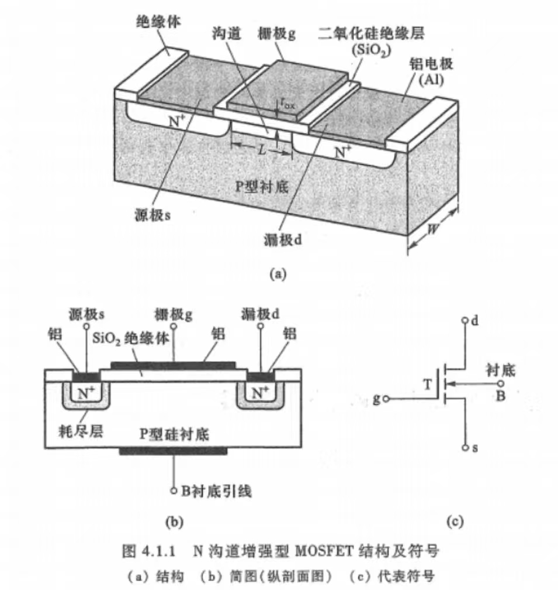

半导体材料：导电性能介于导体与绝缘体之间的材料
常用半导体材料：
半导体特点：
半导体的基本结构（以硅为例）：
（图见 半导体的基本结构）
本征半导体：一种完全纯净的、结构完整的半导体晶体。在绝对零度且无外界其他能量激发时，由于所有原子的价电子被共价键束缚，不能自由移动，此时本征半导体无法导电。
本征激发：半导体中共价键对价电子的束缚不如绝缘体中那么牢固，当温度升高时，部分价电子会获得足够的随机热振动能量而挣脱共价键的束缚，成为自由电子。
在外加电流作用下，这些由本征激发产生的自由电子将在本征硅晶体内形成电流。
载流子：半导体中能够自由移动的带电粒子。
空穴：当电子挣脱共价键束缚成为自由电子后，共价键中留下的空位。
空穴的出现是半导体区别于导体的一个重要特征。
在本征半导体中，自由电子与空穴总是成对出现，因此在任何时候，本征半导体中的自由电子浓度与空穴浓度总是相等的。 可以将空穴视为带电量与电子相等、但电极性为正的粒子，用空穴移动产生的电流来代表价电子移动产生的电流，此时空穴也就成为半导体中的一种载流子了。
载流子的产生与复合：
杂质半导体：
多子：半导体中数量较多的载流子。
少子：半导体中数量较少的载流子。
PN结：P区与N区的分界面形成的空间电荷区
冶金结：P区与N区的交界面
在半导体两个不同区域掺入三价或五价杂质，形成P型区和N型区。由于P区中空穴为多子，N区中自由电子为多子，于是在交界面处形成浓度差。高浓度物质向低浓度区域扩散，导致大部分自由电子和空穴在交界处复合。此时半导体整体正负电荷量仍是相等的，但P区由于失去空穴而留下带正电的杂质离子，N区由于失去自由电子留下带负电的杂质离子。
PN结中指多数载流子复合而几乎耗尽，因此又称耗尽区
由于耗尽区中载流子很少，因此PN结越宽电阻率越高
空间电荷区中会产生一个内电场，方向由带正电的N区指向带负电的P区。这个内电场会阻碍多子的扩散，但是会促进少子的漂移。
PN结中的扩散运动：由浓度差导致的多子的运动，会使空间电荷区变宽
PN结中的漂移运动：由电场作用导致的少子的运动，会使空间电荷区变窄
当漂移运动和扩散运动相等时，空间电荷区便处于动态平衡状态，形成平衡PN结
PN结的单向导电性：PN结外加正向电压时，电阻率很小，PN结导通；外加反向电压时，电阻值很大，PN结截止
此时外加电压形成的外加电场会使P区和N区的多子移动向PN结移动。P区的空穴进入PN结后，会中和一部分负离子；N区的自由电子进入PN结后，会中和一部分正离子。这会使PN结变窄，电阻率减小
此时外加电压形成的外加电场会使P区和N区的多子进一步远离PN结。这会使PN结变宽，电阻率增大
PN结的反向击穿（电击穿）：PN结两端反向电压增大到一定数值时，反向电流突然增加的现象。
反向击穿电压（V_BR）：发生反向击穿所需要的电压
二极管：可以看作PN结的物化器件
符号命名规则：
二极管简化模型分析法：
判断二极管导通/截止：
场效应三极管（场效应管，field effect transistor，FET）：
分类：
N沟道增强型MOSFET
结构：
以一块掺杂浓度较低、电阻率较高的P型硅半导体薄片作为衬底，利用扩散的方法在P型硅中形成两个高掺杂的N+区。
在P型硅表面生长一层很薄的二氧化硅绝缘层，并在二氧化硅表面及N+区表面上分别安置三个铝电极——栅极g（gate）、源极s（source）、漏极d（drain）。

工作原理：
\(v_{GS}\geq V_{TH}\)时：
阈值电压（\(V_{TH}\)）：能够使漏源之间开始导电的栅源电压
当\(v_{GS}>0\)时，相当于在栅极与衬底之间加了正向电压。因为栅极与衬底之间有二氧化硅绝缘层，故不会产生栅极电流\(i_G\)，但会产生由栅极指向衬底的垂直电场。
由于绝缘层很薄，所以产生的电场强度很高。该电场力会排斥P型衬底中的空穴，使它们远离绝缘层，缺少了空穴的区域成为耗尽层。
同时，该电场会吸引自由电子在绝缘层下方聚集，当\(v_{GS}\)达到一定数值时，绝缘层